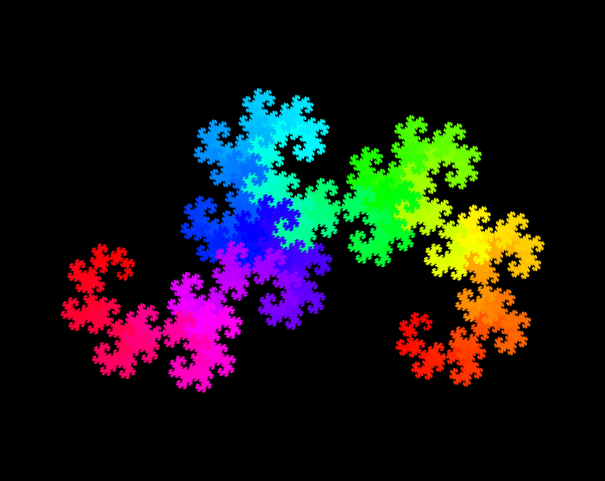

See a list of all my fractals here
I first heard about the dragon curve in 8th grade math class. The assignment was to research a cool math concept and I stumbled upon the dragon curve. I was immediately engrossed by its strange complexity and wanted to learn more about how it worked.
This post is my story about exploring and creating the dragon curve.
I first started by learning about the curve on Wikipedia. There was a lot of complex math I didn't understand but there were a few gifs that explained the curve in a way I could understand.
The first image: 
This image shows how the fractal is made by starting with an 'L' shape and unfolding the shape to form the next iteration.
The other way to visualize the fractal is the recursive approach:

The next iteration is formed by replacing each line segment with the base 'L' shape.
Iteration I: Python
I immediately wanted to make this fractal myself which required figuring out which way to turn. The dragon curve is a single path that never intersects with itself so I only had to figure out which direction the path turned for turn n. Left or Right.
Through trial and error I discovered the following algorithm:
# returns 0 for left and 1 for right
def getTurn(n):
# divide n by 2 as many times as possible
while n % 2 == 0:
n = n >> 1
# I don't know why this works,
# it just does.
n = (n+1) >> 1
return n % 2
print([getTurn(i) for i in range(1, 16)])
# [1, 1, 0, 1, 1, 0, 0, 1, 1, 1, 0, 0, 1, 0, 0]
And that's it! I hooked this algorithm up to a python turtle to draw the fractal on screen.
As with any project, I found a few areas to improve on:
- Speed. Python and turtle are slow so I needed a better way to quickly draw fractals.
- Framing. I quickly discovered how hard it is to measure fractals and display them on the center of a screen and I had to manually set the initial x and y so the fractal would be drawn in the center of the screen.
- Saving. I had to take screen shots of the screen to save fractals which blurred lines and made it hard to automatically save images.
Iteration II: Different Base Shapes
High school started and the dragon curve was still on my mind. Specifically I wanted to generalize this fractal-making-process for more fractals. You may have noticed me referring to a 'base shape L' when creating the dragon curve. I realized that the same logic of replacing each line segment of a path with another base shape could be applied to many paths besides 'L' so I figured out the math behind this logic.
I also found some similar fractals such as the Koch Snowflake that could be created by using different base shapes.
I defined a base shape as an array of angles for each turn which means the dragon curve is [90] and a zig-zag is [90, -90]. I then defined a similar getTurn() function which returned the angle corresponding to turn n.
# n is int >= 1
# base is array of angles
# mirrored is a boolean
def getTurn(base, n, mirrored):
baseSize = len(base) + 1
while n % baseSize == 0:
n //= baseSize
if mirrored:
if (n // baseSize) % 2 == 0:
return base[n % baseSize - 1]
else:
return -base[len(base) - n % baseSize]
else:
return base[n % baseSize - 1]
print([getTurn([90], n, True) for n in range(1, 8)])
# [90, 90, -90, 90, 90, -90, -90]
print([getTurn([90, 60], n, False) for n in range(1, 9)])
# [90, 60, 90, 90, 60, 60, 90, 60]
mirrored is a flag to invert the base path when replacing a segment with the base path. It is True for fractals like the dragon curve and False for fractals like the Koch Snowflake.
I messed around with this algorithm for a while and found some cool shapes, but I hadn't solved any base issues from Iteration II.
Iteration III: Java
Freshman year of college started and I was again looking to improve my dragon curve algorithm. I had heard that Java was a fast language and also easy to create graphics (I learned it is really hard to create a window with C++) so I found some example code and got it working.
Speed. Python and turtle are slow so I needed a better way to quickly draw fractals.
Java was much faster than Python. At the time I didn't know by how much, but I later learned Java is many times faster for certain algorithms. While I didn't do any formal timing tests, I found I could now draw much larger fractals.
Framing. I quickly discovered how hard it is to measure fractals and display them on the center of a screen and I had to manually set the initial x and y so the fractal would be drawn in the center of the screen.
I had tried to tackle the issue of framing the fractal in the window before. I had to consider both the starting position and angle so the path would be centered in the window. An earlier Python drawer did find the rectangular bounding box but couldn't find a nice starting angle.
While I now use a much better algorithm for finding the initial angle, my first attempt consisted of a binary search for the best fitting angle. This worked pretty well but the starting angle would usually be an angle or two off.
At the end of the project, I was happy with the increased speed but I wasn't satisfied with the output format (still a window to screen-shot) and the optimal angle finder.
Iteration IV: C++
Junior year of college began and I had a sudden desire to re-write the fractal in C++. I intended for this to be the final language because c++ is the fastest next to C.
This version would have no expenses spared: The fastest algorithm. The best positioning logic. The best output format.
The Fastest Algorithm
To make this drawer run blazingly fast with billions of points, I had to streamline the auto-positioning logic and I got it down to O(n log(n)) with the following steps:
- Calculate the path given a base shape and the number of iterations.
- Calculate the Convex Hull of the path which makes the algorithm
O(n log(n)). - For each segment of the convex hull, assume the segment lies parallel to the bottom of the image. Calculate how well the convex hull fits to the given image size and use the best-fitting segment to calculate the initial angle.
- Calculate the new bounding rectangle and scale + transform the path to fit the image.
The Best Positioning Logic
That algorithm is not only fast - it's optimal. It finds the best starting angle for any set of points that best fits (largest area) the fractal to an image. If I give the algorithm different dimensions for the image, it may find a different optimal angle.
The Best Output Format
I finally went with outputting to an image instead of opening a window and drawing to the screen as I did with my Python and Java attempts. This meant I could automate fractal-creation and save images without screen shots which introduce human error.
I decided to write to .bmp files because it was the first algorithm I found to easily write images from C++. I then used ImageMagik to convert to .jpg which I used on this site for reduced file size.
Writing to an image meant I had to figure out a line drawing algorithm. While I could have found a library, I strongly dislike using libraries so I found a line drawing algorithm online. In the future I might figure out how to draw from .svg or add different line weights.
Colors
As I was now making my own images, I decided to experiment with color. I made lines that smoothly cycled through primary colors and messed around with eroding fractals to create groovy topographical shapes.
Results
You can see a list of fractal pictures here. I kept the colors simple with a black background and line colors that cycle through primary colors. This color cycling lets you see how the path is drawn.